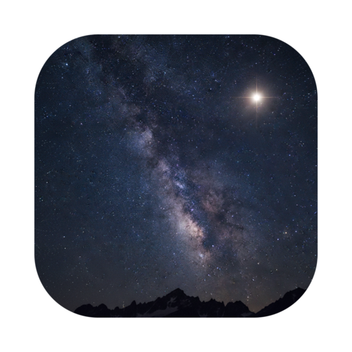
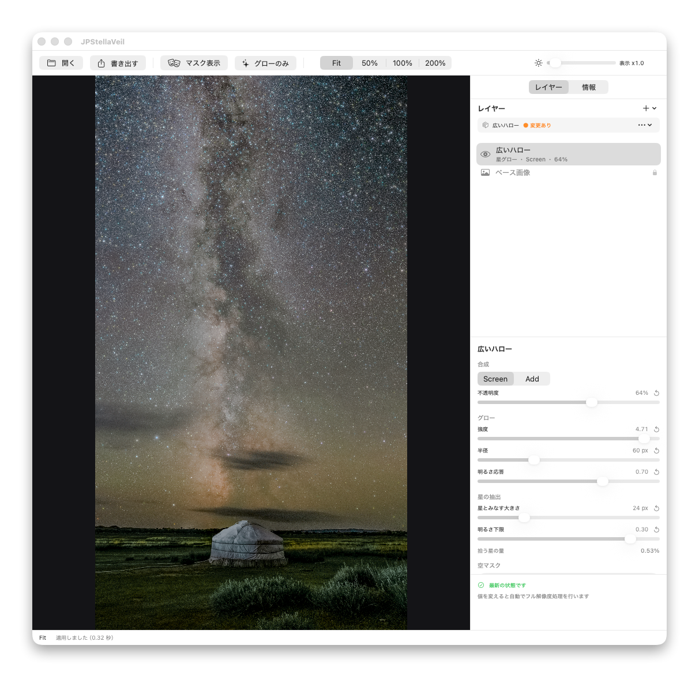

16bit のまま処理する
読み込みから書き出しまで一度も 8bit に落としません。トーンジャンプの心配なく、現像結果の階調をそのまま持ち越せます。

JPStellaVeil
現像済みの 16bit TIFF に、星の明るさに応じたグローをあとがけする macOS アプリ。空だけに効かせて、EXIF や MakerNote は 1 つも落としません。
macOS 14+ · Apple notarized · Sparkle auto-update
ドラッグして見比べる — 星は滲み、前景のシルエットは滲まない。それが空マスクの働きです。
Defaults, not options
Photoshop でも同じことはできます。ただしこの 4 つを同時に満たすには手数が増え、検証も自前になります。JPStellaVeil はすべてを既定の動作にしました。
読み込みから書き出しまで一度も 8bit に落としません。トーンジャンプの心配なく、現像結果の階調をそのまま持ち越せます。
グローの合成はリニア空間で行います。光学フィルターと同じ振る舞いで、明るい星ほど大きく自然に滲みます。
Photoshop の「空を選択」を借りて空マスクを生成。前景の街灯や建物はシャープなまま、星だけが滲みます。
EXIF・MakerNote を 1 つも落とさず書き出し、ExifTool による検証に合格したものだけを保存します。
Layers & Preview
「微細グロー」「標準グロー」「広いハロー」の 3 プリセットをレイヤーとして重ね、右のインスペクタで調整。プレビューは即座に更新されます。

押している間だけ原画表示。効き具合を指先で確認できます。
左が原画、右が処理結果。このページ上部のデモと同じ操作がアプリ内でできます。
値を変えると自動でフル解像度処理。GPU で待ち時間を最小にします。
Install
Apple の公証済みなので、警告なしに起動できます。
最新リリースの DMG を開き、JPStellaVeil をドラッグするだけです。
Sparkle による自動更新を内蔵。新しいバージョンはアプリ内で通知されます。
メタデータ検証には brew install exiftool、空マスクの生成には Adobe Photoshop を使います。どちらも無くてもグローの適用と書き出しはできます。